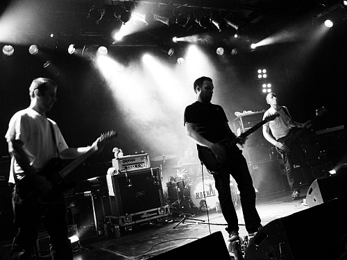
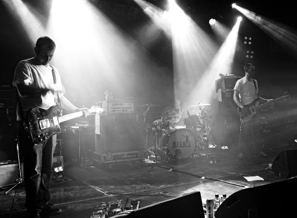
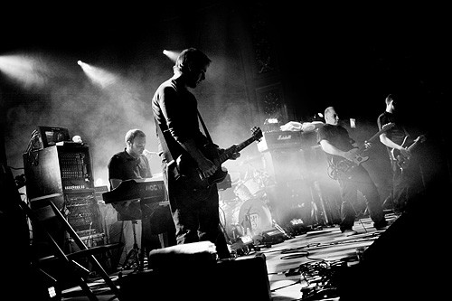

概览
Mogwai
| 地区： | United Kingdom 英国 |
| 风格： | 实验摇滚 Experimental Rock,后摇 Post-Rock |

档案
Mogwai 组建于1996年，地点是苏格兰的格拉斯哥 (Glasgow, Scotland)。他们被誉为“后摇之王”。乐队成员包括吉他手兼主唱Stuart Braithwaite，贝斯手Dominic Aitchison，鼓手Martin Bulloch以及后来加入的吉他手John Cummings。

Mogwai 在1996年发行了他们的第一首单曲 Tuner，之后又陆续发行了几张 EP 和单曲。1997年，他们的第一张专辑 Ten Rapid 问世。这是一张合集，收录了1996-1997年里他们发行的大部分的单曲。虽然只是对先前作品的简单的组合，但整张专辑的音乐听起来和谐一致。每一首歌都使人仿佛置身于一处巨大的，用精密的数学模型连接构建而成的环境之中。当吉他回授的声浪冲刷过的时候，歌曲中的声音仿佛是从遥远的空间传来。多听几遍之后，在交织缠绕的吉他声中和渐入佳境的漫步中，音乐让所有人都沉醉欲眠。
同样是在1997年，他们还发行了一张 EP - 4 Satin，并且在这段时间里开始着手录制他们第一张正式的专辑 Young Team。这张专辑收录了他们早先的一些单曲和EP，呈现在我们面前的是一个复杂扭曲，闪烁着微光的灰暗的音乐背景。专辑中的歌曲被首尾融合在一起，听起来很容易使人搞不清楚歌曲的界限。专辑从吉他声与漂浮于其上的简单的人声开始，在后面的歌曲中，乐队不停地变换声音，但并不是简单地通过增大和减小音量的方法，他们用小巧而生动的细节精心地勾勒他们的音乐，当史诗般的 Mogwai Fears Satan 响起的时候，人们意识到这是一张将音乐创新和情感力量完美融合在一起的，超越它同时代音乐的专辑。
1999年，Come on Die Young 发行。这张专辑延续了上一张专辑 Young Team 的曲风，对于噪音与即兴的处理与先前的专辑同样迷人，但整张专辑给我们一种过于熟悉的感觉，因为每一首歌他们都反复演奏相同的调式，并且还把它们混合到下一首歌曲里，好像一段做作的没有结尾的空泛的蠕动，掺杂上一些突然爆发的噪音。也许上面的评述对于 Come on Die Young 来说是过于吹毛求疵了，因为单就这张专辑来说无疑是相当优秀的，甚至可以说达到了一个顶点。但是正是由于 Mogwai 此前的两张专辑赢得了太多的好评，对于噪音的运用以及反复的即兴演奏技巧达到了炉火纯青的境界，人们开始担心自此 Mogwai 无法突破自己固有的风格和声音模式。这也是许多一夜成名的乐队所无法摆脱的痼疾。

2001年，Rock Action 发行。与前两张专辑不同的是，Mogwai 在这张专辑中去掉了大部分结构紧凑的即兴演奏和噪音，代之以悦耳动听的旋律和人声，他们又重新找回了在第一张专辑中那种令人激动的感觉。如同其他许多乐队一样，Mogwai 也一度陷于后摇的陈词滥调之中，他们需要一条路来超越自己，同时又不是完全改变自己音乐的风格。通过邀请作曲家 Dave Fridmann 和 Super Furry Animals 的 Gruff Rhys，他们做到了。在第一首歌 Sine Wave 中，Mogwai 将耸立的吉他扭曲，强劲有力的鼓声，以及电子乐的结构融为一体。这让我们想起了Tortoise的Standards。但是专辑最引人瞩目的是加入了更多传统音乐的元素。由优美的吉他和弦演绎的温暖惬意的歌谣 Take me Somewhere nice 和 Dial: Revenge 带给我们的是安静遐思。特别是 Dial: Revenge（dial在威尔士语中的意思是revenge）得益于Rhys用他含糊母语的神情吟唱。这张专辑证明了只要处理得当，最安静的民谣与最聒噪的摇滚也可以相得益彰，同时也说明了Mogwai具备糅合这两种音乐的能力。
Mr. Beast，这张2006年发行的专辑可以称得上是 Mogwai 最老练的同时也是最容易被大家接受的专集。它撕掉以往他们最钟爱的电子音乐的装饰，取而代之的是以回归自然的本色的声音来征服年轻的一代。Mr. Beast 是一张歌声自然得令人吃惊的专集，大家最可能的感觉是好象听到他们在录音之前的练习。这种新鲜感也使 Team Handed 有了如同狂热的 We're No Here 一样的冲击力和影响。有趣的是，Mr. Beast 里面更多的歌都是偏向前一种的曲风；Friend of the Night, Emergency Trap 和完美的慢慢燃烧起来的序曲 Auto-Rock 通过对钢琴和钢棒吉他（lap steel）的巧妙使用使整张专集体现出一种微妙的－确切的说－幽雅的风格。在 Acid Food 和恢弘的 I Chose Horses（以重贝司和日本 ENVY 乐队的 Tetsuya Fukagawa 的独白为特征）中，Mr. Beast 又完全像是一首田园诗歌。然而，Mogwai 并没有完全放弃他们重金属的一面，像前面提到的 We're No Here 和 Glasgow Mega-Snake。任何曲名中包含 mega 或者 snake 都是摇滚风格，这首也不例外，以一段可以导致幽闭恐怖症的吉他的咆哮作为开端，使这首歌当选 Mogwai 所有专集中最激烈的一首。未待歌声消逝，Mr. Beast 已充分证明了 Mogwai 乐队已经迎来了他们的颠峰状态！